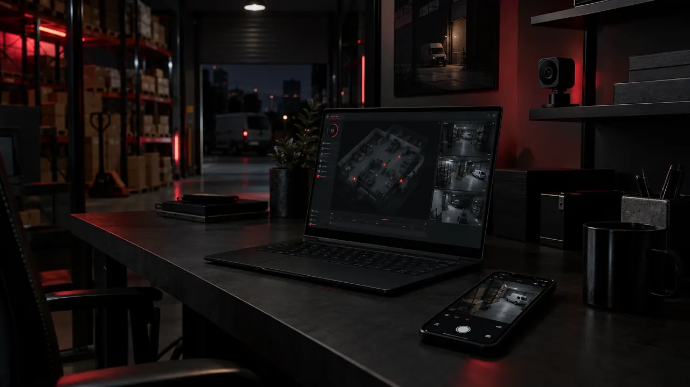

Podgląd na żywo
Obraz i dźwięk z komputera z kamerą otwierasz na telefonie albo drugim komputerze. Masz pełny ekran i cyfrowe przybliżenie.
Strona główna / Monitoring dla firm
Podgląd, nagrania i zdarzenia dla biura, sklepu, warsztatu i magazynu. Sprawdź, co działa już teraz i jak wygląda wdrożenie.
HOME SECURITY DLA FIRM
Biuro, sklep, warsztat albo magazyn. Komputer Windows z kamerą nagrywa obraz, a Ty albo osoba odpowiedzialna sprawdzacie podgląd, nagrania i zdarzenia z dowolnego miejsca.

CO DZIAŁA JUŻ TERAZ
Opisujemy tylko funkcje, które działają w obecnym wydaniu. Rzeczy w przygotowaniu są wyraźnie oznaczone.
Obraz i dźwięk z komputera z kamerą otwierasz na telefonie albo drugim komputerze. Masz pełny ekran i cyfrowe przybliżenie.
Nagrania wybierasz po dniu i godzinie. Odtwarzasz je w panelu i przewijasz z dokładnością do sekund.
Nagrania trafiają do folderu na komputerze, na Twój Google Drive albo w oba miejsca. Każdy zapis jest potwierdzany osobno.
Komputer zgłasza ruch w obrazie i głośny dźwięk. Do zdarzenia zapisuje klatkę z kamery, a Ty filtrujesz je po dniu i rodzaju.
Zdarzenia z listy zapisujesz do pliku CSV. Otworzysz go w Excelu, Arkuszach Google albo w systemie księgowym.
Najpierw logujesz się do konta, potem odblokowujesz panel PIN-em. W profilu widzisz ostatnie logowania i nieudane próby.
Kamera, nagrywanie, folder, połączenie i chmura mają osobne stany. Od razu wiesz, który element wymaga uwagi.
Instalator pobierasz ze strony Pobierz. Program sam sprawdza, czy jest nowa wersja.
POZIOMY DOSTĘPU
Konto HOME SECURITY ma cztery poziomy dostępu zapisane po stronie serwera. Poziom zmienia tylko właściciel konta.
Pełna administracja kontem i nadawanie poziomów dostępu innym osobom.
Zarządzanie konfiguracją systemu.
Obsługa kamer na co dzień.
Bezpieczny podgląd bez zmiany ustawień. Każde nowe konto zaczyna od tego poziomu.
W PRZYGOTOWANIU Pracownikom poziomy przypisujemy przy wdrożeniu. Samodzielne zapraszanie osób z panelu jest w przygotowaniu, podobnie jak powiadomienia e-mail o zdarzeniach.
JAK WYGLĄDA WDROŻENIE
Wdrożenie zaczyna się od rozmowy. Najpierw sprawdzamy, czy sprzęt w Twojej firmie spełnia wymagania.
Wypełniasz formularz. Opisujesz miejsce, liczbę kamer i osoby, które mają mieć dostęp.
Sprawdzamy wymagania, instalujemy program Windows i wybieramy folder nagrań lub Google Drive.
Zakładamy konta, ustawiamy PIN-y i poziomy dostępu dla właściciela i pracowników.
Razem potwierdzamy podgląd, zapis pliku, odtwarzanie i zdarzenia w diagnostyce.
ZAPYTAJ O OFERTĘ
Ofertę przygotowujemy indywidualnie. Na stronie nie ma płatności online.